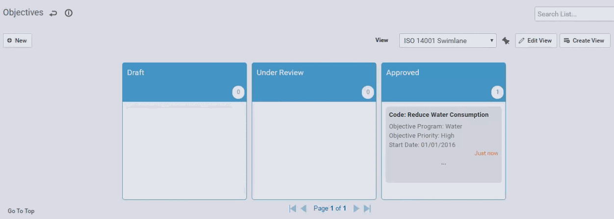
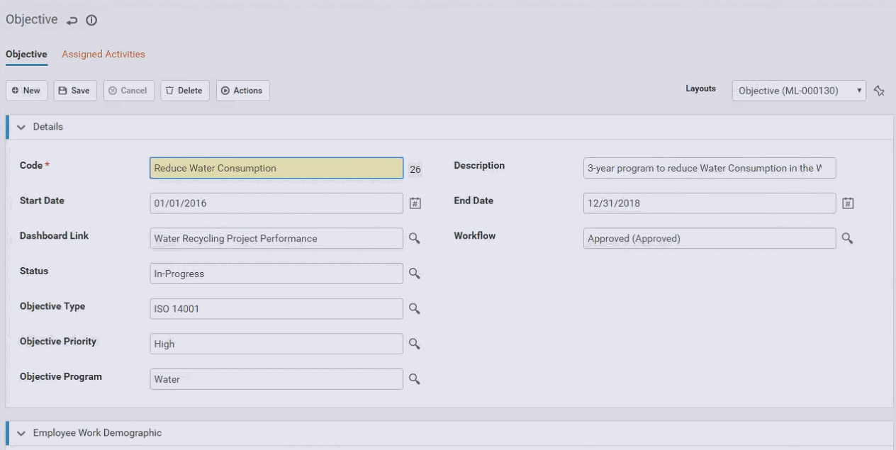
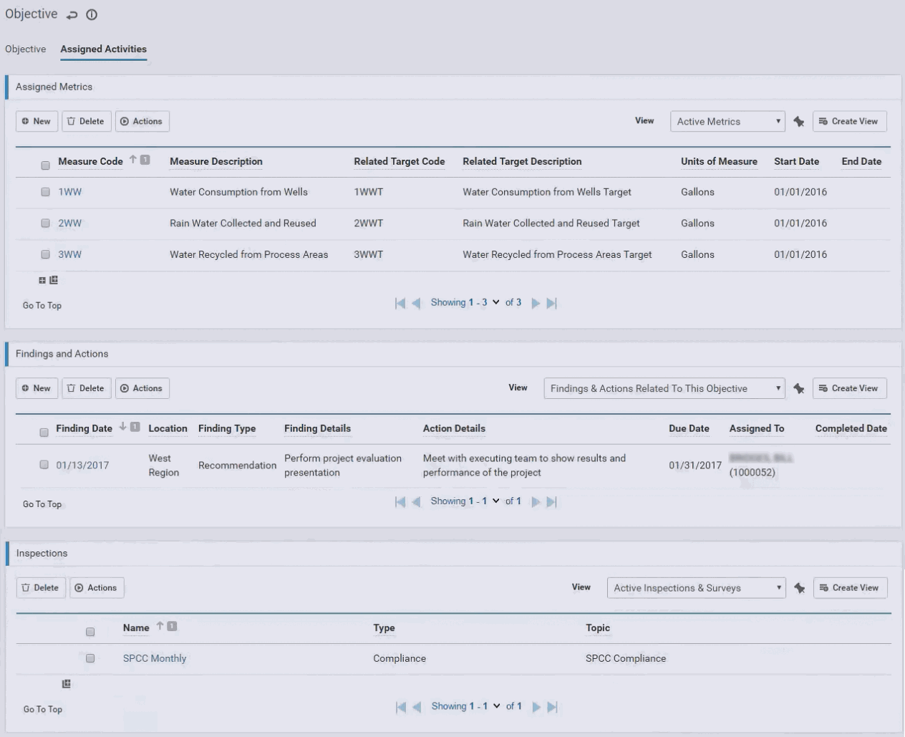
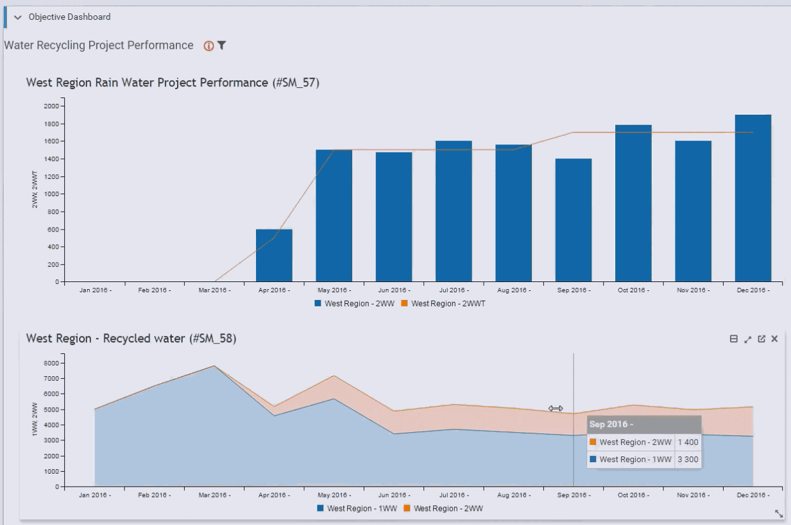

The Objectives module enables EHS Managers to evaluate the actual progress vs set targets for each EHS program objective. A defined objective provides a consolidated view of the activities assigned to the objective, such as metrics, actions and inspections, and includes a Dashboard view to monitor the objective's progress (e.g. actual vs targets) directly in the objective record.
An objective can be subject to an approval workflow.
Objectives may be imported into Cority using the Import Utility (see Importing Text or XML Files into Cority Tables).
In the Business Intelligence or Environmental menu, click Objectives.

Click a link to edit an existing objective, or click New.

Enter a Code for the objective, and complete the remaining fields as appropriate. Of note:
If you want to be able to monitor the objective’s progress from within the objective record, select the appropriate dashboard view in the Dashboard Link field. The corresponding dashboard displays at the bottom of the Objective tab.
In the Advanced Dashboard module, create a view with indicators related to the objective (e.g. metric vs. target, inspection completion, metric completion, findings & actions completions, etc.). For information about creating a dashboard view, see Using the Advanced Dashboard.
If the objective is subject to approval, select the Workflow status. If a swimlane view was created for the Objectives list, this field will will be updated with the appropriate step from the WorkflowStatus look-up table when the objective is moved from one swimlane to another.
Click Save.
On the Assigned Activities tab:

In the Assigned Metrics section, identify the metrics that are part of the objective: either create new metrics or select existing metrics.
See Setting Up Custom Metrics for information about creating and assigning metrics.
Note that although the Related Target metric is used to facilitate tracking actual vs target data, it is not mandatory that an assigned metric has a related target; for example if you are tracking a metric for the first time and you are benchmarking the metric.
In the Findings and Actions section, record any findings and actions for this objective. This list will also display any findings and actions associated with the selected metrics or related targets. For information about recording a finding and its actions, see Recording a New Finding.
In the Inspections section, identify any inspection programs associated with this objective. For more information, see Creating an Inspection or Survey Program.
The Dashboard section on the Objective tab displays the Advanced Dashboard view that is specified in the Dashboard Link field.
This display allows for the usual Dashboard functionality (zoom in, go to source data, etc.) but you cannot edit a Dashboard view from the objective record.
